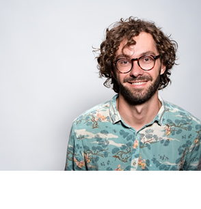
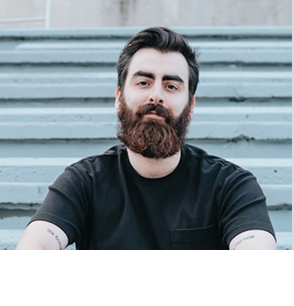
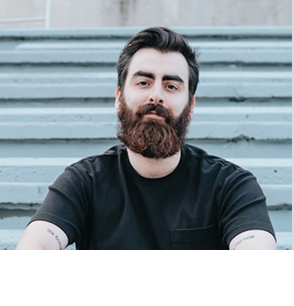
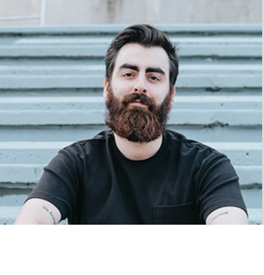
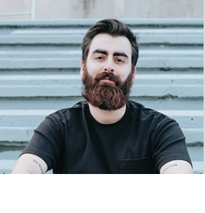

Wind addict school

 



Adícora es un pueblo que se encuentra costa noreste de la península de Paraguaná en Venezuela, específicamente en el municipio Falcón y a 24 kilómetros al sur de la isla de Aruba. Cuenta con un Aeródromo al llegar al pueblo. Se puede acceder por vía terrestre o aérea (en avioneta). Es una playa poco profunda protegida por arrecifes, aguas frescas, con mayor oleaje que la zona occidental. Debido a los fuertes vientos que allí se encuentran, se ha convertido en un centro internacional para la práctica del kiteboarding ywindsurfing.